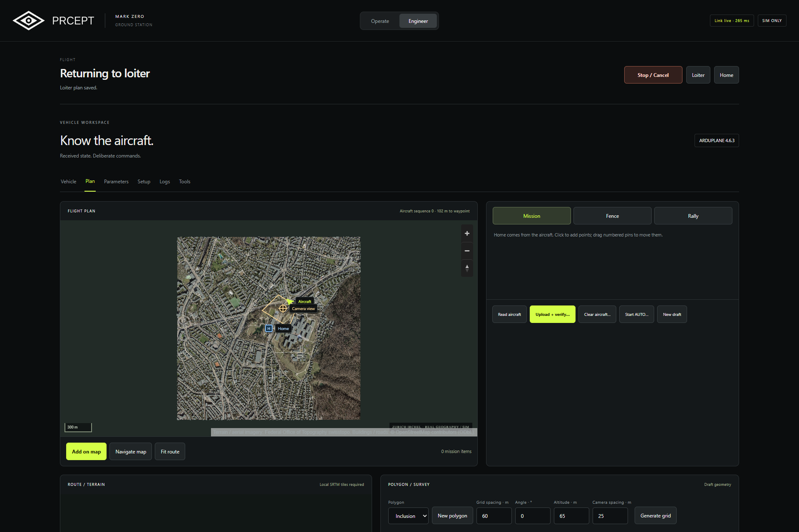
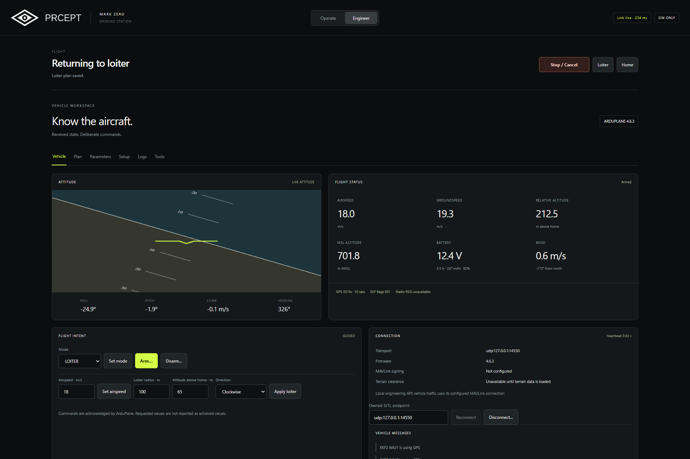
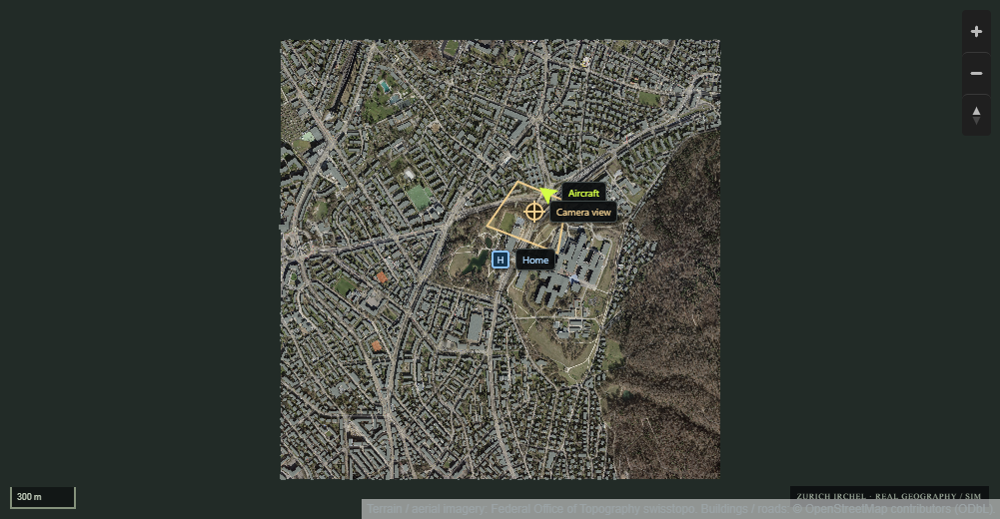
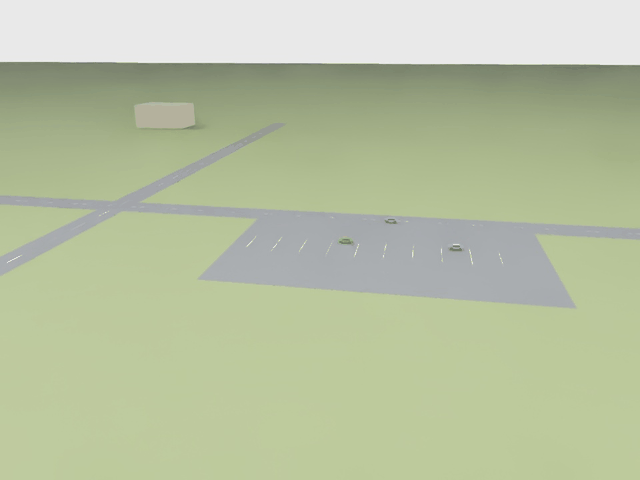
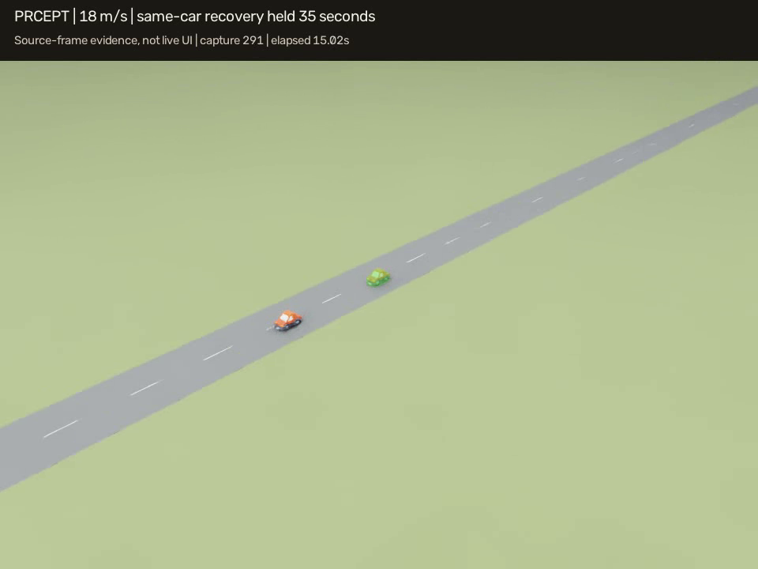
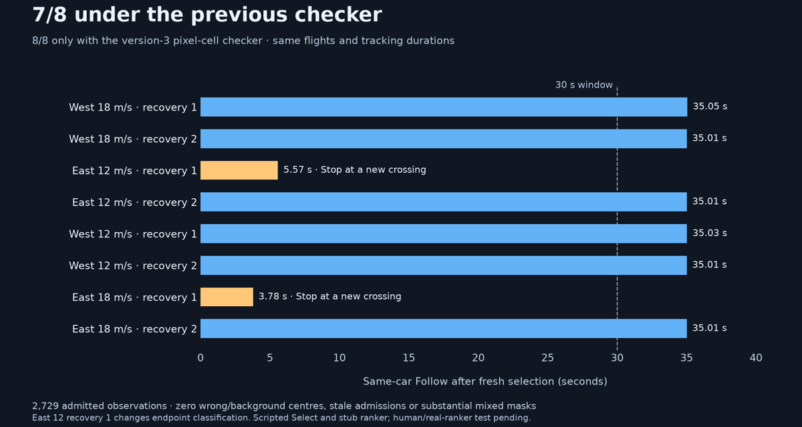

Percept Mark Zero
A personal side project: visual perception and camera-guided flight around an operator’s selection.
Launch into loiter, look around with the gimbal, tap something in the camera view, and press Follow when a fresh track is ready. Stop clears the selection and returns to loiter; Home requests return-to-launch. The research stack lives under intair / PRCEPT; this page is Mark Zero as it stands in simulation.

What the demo does
A browser ground station talks to stock ArduPlane SITL and an Isaac-rendered camera scene. Two workspaces:
- Operate — camera, map, selection, Follow, Stop, and return.
- Engineer — mission planning, fences, parameters, telemetry, logs, replay, and checklists (writes limited to the launcher-owned simulator).
The map labels Aircraft and Home, with a footprint and viewing line for the camera’s estimated ground view. Map-scale testing uses a prepared Zurich Irchel environment (terrain, aerial imagery, buildings, roads, simulated traffic). Procedural practice scenes remain for day-to-day development.




How the pieces fit
- Ground station — browser UI, operator commands, planning, telemetry.
- Aircraft runtime — camera ingestion, visual tracking, guidance, aircraft link.
- EdgeTAM / SUPERTAM — human-prompted segmentation; sim defaults to plain EdgeTAM; an earlier guarded profile remains for external-autopilot sessions.
- Stock ArduPlane — dynamics, navigation, stabilization, native failsafes.
- Isaac Sim — GPU scenery and controlled camera imagery.
Tracking starts from a human selection — no automatic target pick. Guidance uses visual observations and own-aircraft navigation; simulated target truth stays reserved for evaluation. Stop, freshness checks, and link-loss handling are part of the control lifecycle. Camera-aware course / airspeed / gimbal planning modes stay opt-in while repeatability is evaluated.

Where things stand
Operator workflow, ground station, perception runtime, and native autopilot integration are connected in simulation. Focus now is consistent selected-object tracking, dependable flight and camera coordination, acquisition responsiveness, and useful observation over longer runs.
Recent single-object studies separate visual tracking quality from flight and view-feasibility failures. Good development runs sit alongside unresolved continuity and repeatability limits. Experimental controller and transport changes remain optional.


Still open
- Human-operated qualification and crowded real-world identity.
- Real camera / gimbal integration and embedded performance.
- Physical board, radio, RC bench, and outdoor flight.
- Longer-run continuity beyond scripted fixtures.
Intent
Practice the observation loop: find, hold, follow, cancel. Stock ArduPlane underneath; a thin operator UI on top. Hardware comes after the sim path is honest.